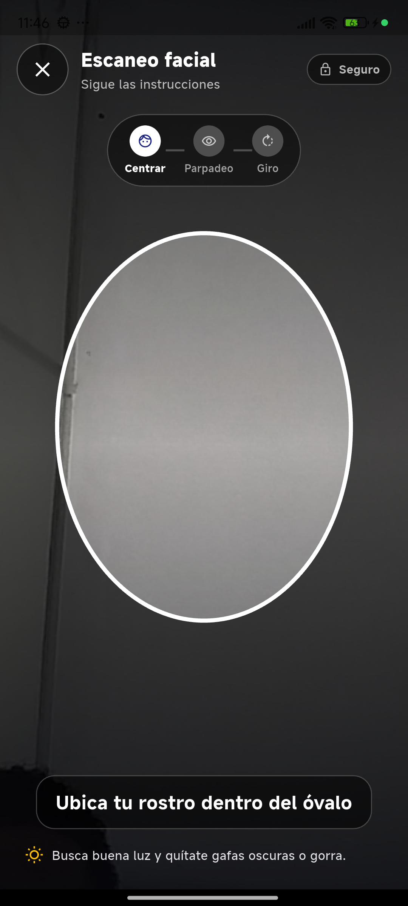
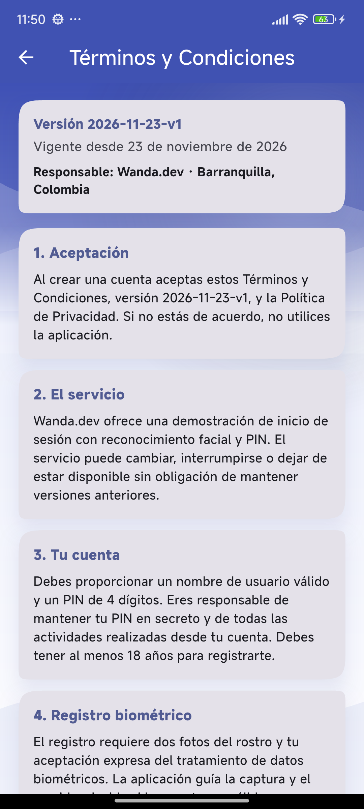

Usuario + PIN de respaldo
El PIN se guarda con PBKDF2-HMAC-SHA256 de 100.000 iteraciones, nunca en texto plano.
Autenticación biométrica · Proyecto académico
Dos selfies guiadas, un vector de 128 valores y una decisión en milisegundos. Pensado para móviles de gama baja.
01 · Alta de usuario
Nombre, PIN de respaldo y consentimiento. Después, dos selfies guiadas.
El PIN se guarda con PBKDF2-HMAC-SHA256 de 100.000 iteraciones, nunca en texto plano.
La versión 2026-11-23-v1 queda registrada con fecha y hora. Mejora de IA opcional y revocable.
El servidor guarda un vector de 128 números. La selfie original no se conserva.
Una sola cuenta, dos capturas y listo. Sin formularios largos ni verificaciones por correo.
números por rostro. Suficientes para distinguir personas sin almacenar su imagen.
02 · Captura guiada
El detector ligero del teléfono solo acompaña al usuario: centrar el rostro, parpadear y girar la cabeza. Las fotos se envían al backend para la decisión final.
Una sola persona, buena luz y el rostro dentro del óvalo.
El detector local comprueba que los ojos están abiertos.
Segunda selfie con la cabeza de lado para la prueba de vida.
El teléfono no ejecuta el reconocedor pesado: por eso la app arranca rápido y no calienta los equipos de 1–2 GB de RAM.

03 · El corazón del sistema
SFace es una CNN MobileFaceNet preentrenada: recibe una cara alineada de 112×112 píxeles y devuelve 128 números, la “huella” del rostro.
ML Kit guía el encuadre en el móvil.
YuNet localiza 5 puntos faciales.
MiniFASNet + paralaje 3D.
SFace convierte la cara en 128 valores.
/identify compara con todos los vectores guardados. Si el mejor coseno supera 0,363, crea la sesión.
[0.21, −0.07, 0.44, … 128 valores]
04 · Seguridad y privacidad
Dos selfies, tres comprobaciones independientes y una sesión que expira. Ninguna foto original se guarda como credencial.

Dos variantes de MiniFASNet promedian la probabilidad de cara real; umbral 0,6. Detecta impresiones y pantallas por textura y frecuencias.
Con ojos, nariz y comisuras se calcula cómo se deformaría una foto plana al girar. Una nariz real se desvía de esa predicción.
Ambas fotos deben ser la misma persona. Tras 5 intentos fallidos hay 5 minutos de bloqueo; el token aleatorio dura 7 días.
Estado honesto de la demo: HTTP y SQLite sin cifrar en reposo. Antes de producción: HTTPS, cifrado de embeddings y calibración con usuarios reales.
05 · Herramientas
El reconocimiento pesa en el servidor; el teléfono solo muestra una guía ligera y sube dos fotos comprimidas.
| Herramienta | Para qué | Por qué |
|---|---|---|
| Flutter / Dart | App Android | Compila nativo, arranca rápido y usa menos RAM. |
| Camera + ML Kit | Guía en vivo | Detector ligero en el móvil; no envía video. |
| FastAPI + Uvicorn | API REST | Formularios multipart, validación y /docs. |
| OpenCV + ONNX | YuNet, SFace, MiniFASNet | Modelos portables; el servidor no necesita PyTorch. |
| NumPy + SQLite | Vectores y persistencia | Sin servicios externos ni configuración pesada. |
| PBKDF2 + secrets | PIN y tokens | Hash lento, comparación constante y sesiones aleatorias. |
| shared_preferences | Sesión local | Restaura la sesión sin volver a escanear. |
Recorrido completo